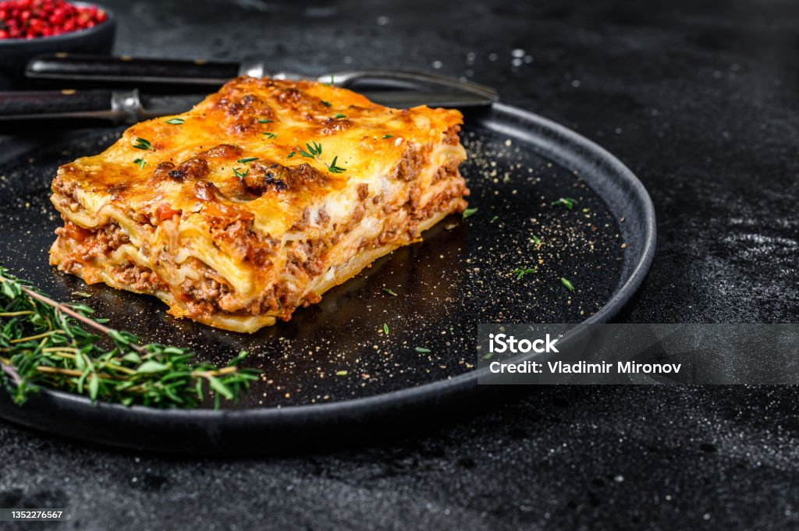

Lasanga

Description
Indulge in layers of cheesy, meaty goodness with this classic lasagne recipe. Tender sheets of pasta are stacked with a savory meat sauce simmered in ripe tomatoes and aromatic herbs, then layered with a creamy, luscious béchamel sauce and a generous sprinkle of melted mozzarella and parmesan cheese. Baked to golden perfection, each slice offers a perfect balance of flavors and textures — from the rich, hearty filling to the soft, comforting pasta and the slightly crisp, bubbling top. Perfect for family dinners or special gatherings, this lasagne is a timeless Italian favorite that promises warmth, comfort, and satisfaction in every bite.
Ingredients
For the Meat Sauce
- 500g (1 lb) ground beef (or a mix of beef & pork)
- 1 medium onion, finely chopped
- 2-3 garlic cloves, minced
- 800g (28 oz) canned chopped tomatoes
- 2tbsp tomato paste
- 1tsp dried oregano
- 1tsp dried basil
- ½tsp chili flakes (optional)
- Salt and pepper, to taste
- 2tbsp olive oil
For the Béchamel Sauce
- 50g (3tbsp) butter
- 50g (⅓ cup) all-purpose flour
- 600ml (2½ cups) milk, warm
- Pinch of nutmeg
- Salt and pepper, to taste
For the Layers
- 9-12 lasagne sheets (fresh or dried)
- 200g (2 cups) shredded mozzarella
- 50g (½ cup) grated parmesan
Steps
Prepare the Meat Sauce
- Heat olive oil in a large pan over medium heat.
- Add the onion and sauté until soft and translucent.
- Stir in the garlic and cook for 30 seconds until fragrant.
- Add ground beef and cook until browned, breaking up any lumps.
- Stir in chopped tomatoes, tomato paste, oregano, basil, chili flakes (if using), salt, and pepper.
- Reduce heat and let it simmer for 20-25 minutes, stirring occasionally, until thickened.
Prepare the Béchamel Sauce
- In a seperate saucepan, melt butter over medium heat.
- Whisk in flour and cook for 1-2 minutes to form a roux.
- Gradually pour in warm milk, whisking constantly to avoid lumps.
- Cook for 5-7 minutes until the sauce thickens.
- Season with salt, pepper, and a pinch of nutmeg.
Assemble the Lasagne
- Preheat your oven to 180oC/350oF.
- Spread a thin layer of meat sauce on the bottom of a baking dish.
- Place a layer of lasagne sheets over the sauce.
- Add a layer of meat sauce, then a layer of béchamel sauce, and sprinkle some mozzarella.
- Repeat layers util all ingredients are used, finishing with a top layer of béchamel sauce and parmesan.
Bake
- Cover the dish with foil (to prevent the top from burning).
- Bake for 25-30 minutes, the remove the foil and bake another 10-15 minutes until the top is golden and bubbly.
- Let it rest for 10 minutes before slicing - this helps the layes hold together.
Home